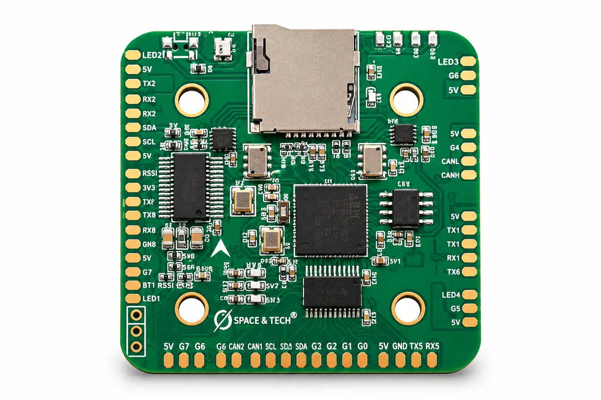

How to choose a drone flight controller in India
Quick answer: Pick the flight controller by firmware support (Betaflight, INAV, ArduPilot), UART count, IMU quality and mounting size. Match it to your ESC and GPS before you buy.
What does a flight controller do?
The flight controller (FC) is the brain of a drone. It reads the IMU (gyroscope and accelerometer), takes your stick commands from the receiver, and sends motor commands to the ESC hundreds or thousands of times every second. A good FC keeps the drone stable and responds cleanly to your input.
Five things to check before you buy
- Firmware: Betaflight for freestyle and racing, INAV for GPS and long range, ArduPilot or PX4 for autonomous and survey missions.
- Processor: F4, F7 and H7 chips differ in speed and memory. Higher loop rates and more features need a faster processor.
- IMU and vibration handling: a quality gyro and soft-mounting make tuning easier and flights smoother.
- UARTs and ports: count the receiver, GPS, VTX, telemetry and camera ports you need. Running out of UARTs is a common build mistake.
- Mounting size: 20x20, 25.5x25.5 and 30.5x30.5 mm are the usual patterns. Match your frame and ESC stack.
Match the FC with the rest of the stack
A flight controller never works alone. Check that its ESC connector voltage and current rating suit your ESC, that it has a port for your receiver protocol such as ELRS, and that GPS wiring is supported if you plan to fly long range or use return-to-home.
All-in-one boards combine FC and ESC in one PCB. They save weight and wiring, which suits compact builds, but a stack is easier to repair because you can replace each board separately.
Where to buy in India
Space and Tech Engineering designs Aazmuth and Exelr8 flight controllers in India. The models below link to specifications and documentation. Ask for the exact firmware target and revision, current availability, and a quote for your quantity before ordering.
Related products from Space and Tech Engineering

Aazmuth STM32H7 UAV Flight Controller
Designed in India for professional UAVs, Aazmuth has three IMUs and two barometers on separate buses. Its modular design lets you replace an IMU board without replacing the controller.

Exelr8 F7 FPV Flight Controller
An F7 flight controller for 3S to 6S racing and freestyle quads, with an onboard OSD and separate 5 V and 10 V outputs for supported peripherals.

SATE AIO Flight Controller and 4-in-1 ESC
A combined flight controller and 4-in-1 ESC for compact builds, with DShot and AM32 compatibility. It reduces the number of separate boards in the stack.

Kinetik FPV Flight Controller
A 5 x 5 cm STM32H7 flight controller for 3S to 6S builds, with two IMUs, two barometers and support for Betaflight and ArduPilot.
Frequently asked questions
Which flight controller is best for beginners?
A flight controller with Betaflight support, a clear pinout and good documentation is easiest to start with. Check that it has enough UARTs for your receiver and VTX.
Do I need F7 or H7 for an FPV drone?
Not always. F4 boards fly well for most 5-inch builds. F7 and H7 add processing headroom, more UARTs and room for extra features.
Can one flight controller run both FPV and GPS?
Yes, if it has a free UART for the GPS and firmware that supports it, such as INAV or ArduPilot.